Trackly, ready for the App Store.
A real set produced by the App Store Assets plugin: eight iPhone 6.9" screenshots — including smart capture, widgets and the Apple Watch features — three watchOS screenshots, plus a product-page header, search creative and In-App Event media, all rendered at Apple's exact pixels from the app's own captures and design sources.
Screenshots
Ordered as a story: the promise, then the three things only Trackly does — smart capture, widgets, Watch — then the depth. Each canvas keeps its editable HTML source.
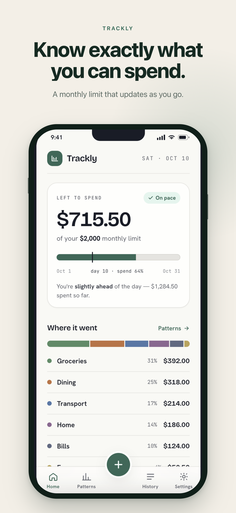
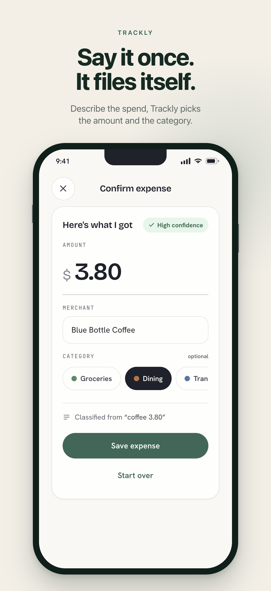

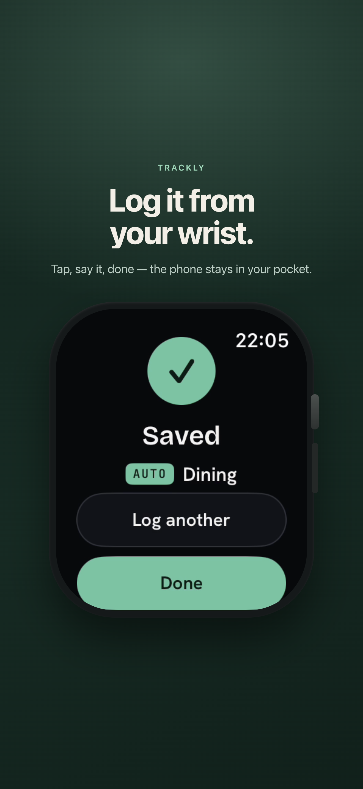
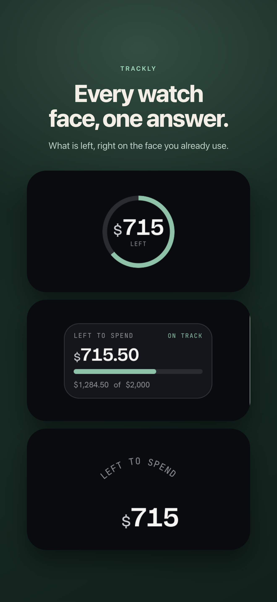
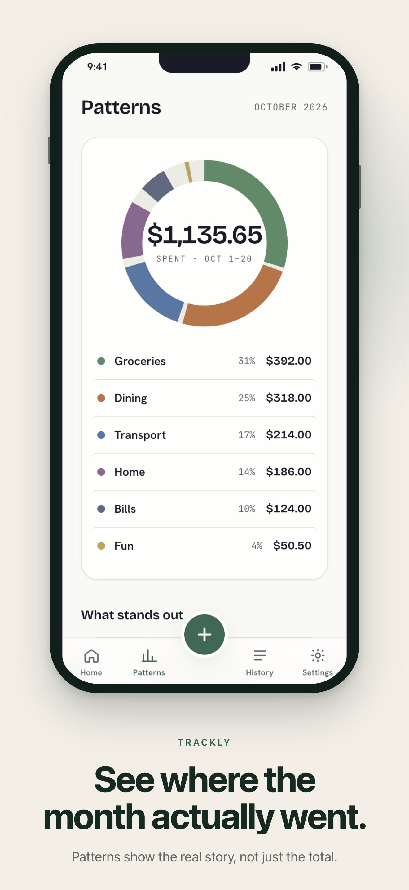
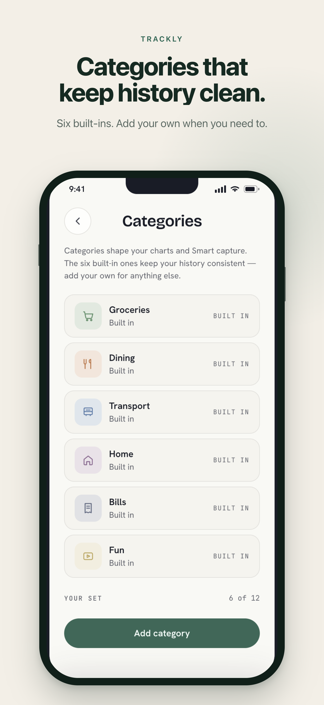
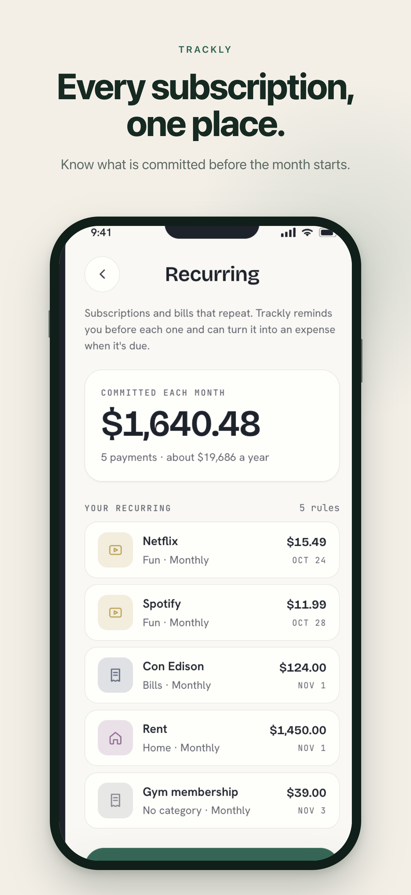
Watch app screenshots (watchOS)
The Watch app needs its own set at 416×496 — captured directly from the Watch screen recording, same size across localizations.
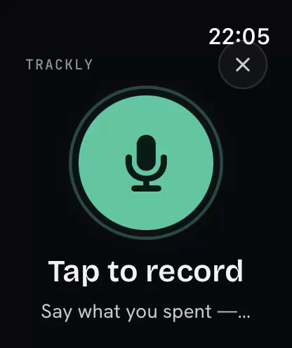
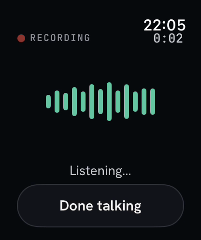
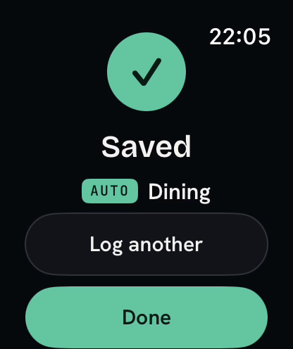
Product page header
Text-free and universal: one file serves every locale. The mark and name sit inside Apple's safe area.
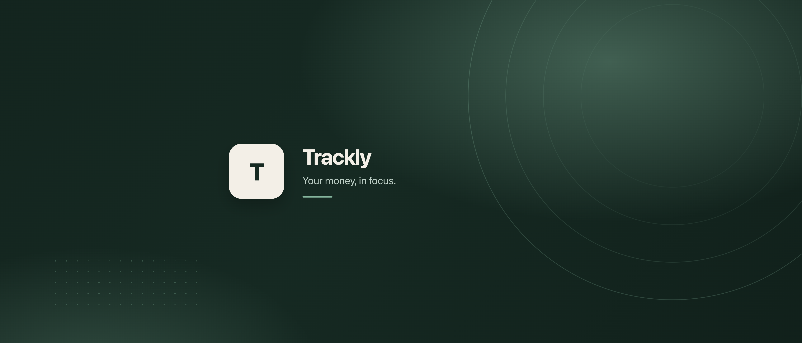
Search results creative
One big tilted phone and a hook that still reads when the asset is shown at search size.
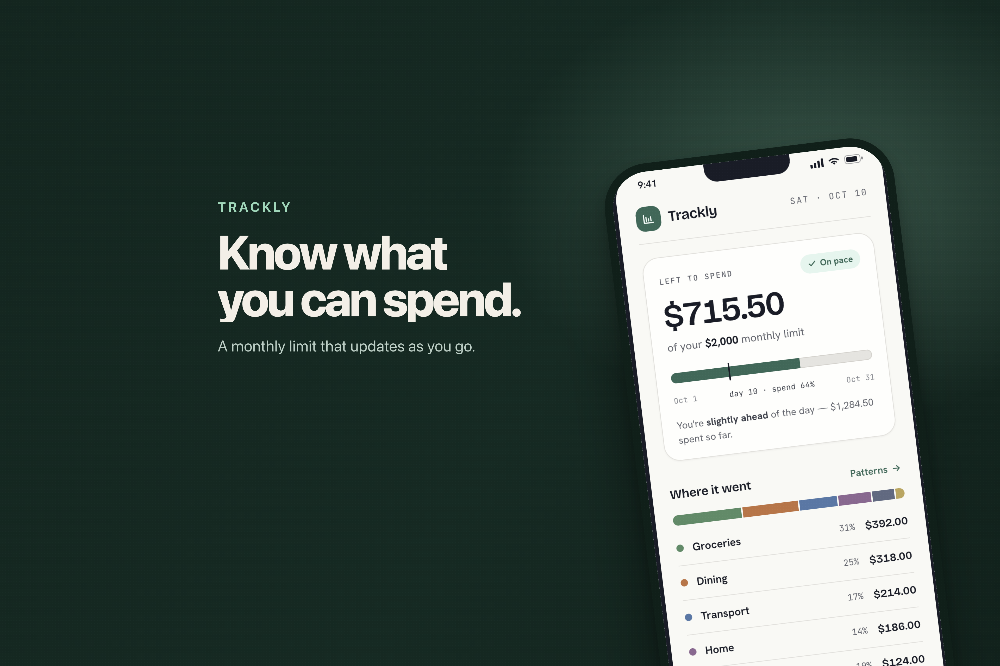
In-App Event media
Landscape card and portrait detail. The badge zone stays clear because App Store Connect applies the badge.
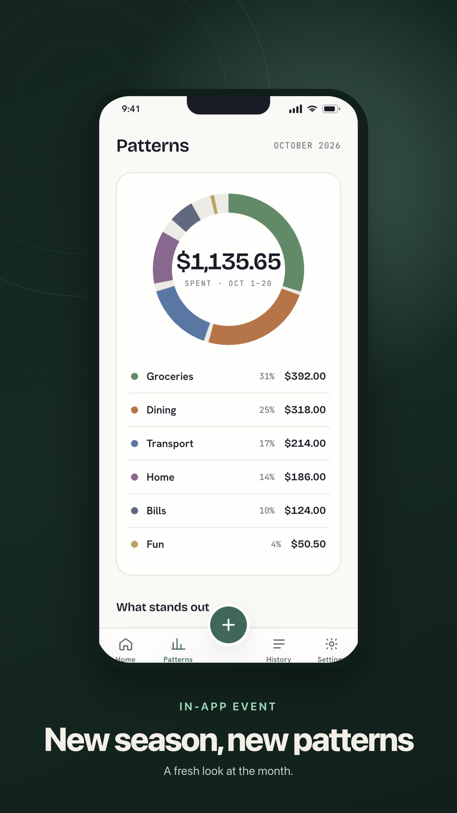
The plan behind it
asset-plan.json is the source of truth; every file, spec, order and placement comes from it.
| ID | Kind | Spec | Pixels | Placement | Order |
|---|---|---|---|---|---|
| shot-01 | screenshot | iphone-1320x2868 | 1320×2868 | APP_SCREENSHOT | 1 |
| shot-02 | screenshot · smart capture | iphone-1320x2868 | 1320×2868 | APP_SCREENSHOT | 2 |
| shot-03 | screenshot · widgets | iphone-1320x2868 | 1320×2868 | APP_SCREENSHOT | 3 |
| shot-04 | screenshot · Watch | iphone-1320x2868 | 1320×2868 | APP_SCREENSHOT | 4 |
| shot-05 | screenshot · complications | iphone-1320x2868 | 1320×2868 | APP_SCREENSHOT | 5 |
| shot-06 | screenshot | iphone-1320x2868 | 1320×2868 | APP_SCREENSHOT | 6 |
| shot-07 | screenshot | iphone-1320x2868 | 1320×2868 | APP_SCREENSHOT | 7 |
| shot-08 | screenshot | iphone-1320x2868 | 1320×2868 | APP_SCREENSHOT | 8 |
| watch-01 | screenshot · watchOS | watch-416x496 | 416×496 | APP_SCREENSHOT (WATCHOS) | 1 |
| watch-02 | screenshot · watchOS | watch-416x496 | 416×496 | APP_SCREENSHOT (WATCHOS) | 2 |
| watch-03 | screenshot · watchOS | watch-416x496 | 416×496 | APP_SCREENSHOT (WATCHOS) | 3 |
| header-01 | header | header-3840x1646 | 3840×1646 | PRODUCT_PAGE_HEADER_ASSET | — |
| search-01 | search | search-3840x2560 | 3840×2560 | APP_STORE_SEARCH_RESULTS_ASSET | — |
| event-card-01 | event-card | event-card-3840x2160 | 3840×2160 | EVENT_CARD_ASSET | — |
| event-detail-01 | event-detail | event-detail-2160x3840 | 2160×3840 | resolve from live ref data | — |
The validator proves dimensions, formats, alpha, counts and the mechanical copy rules. It cannot judge 4+ suitability, inclusivity or whether a claim is true — that pass stays with a person before anything is submitted for review.